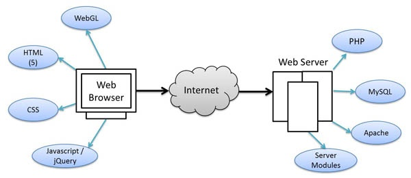

a. Introdução
A linguagem PHP é a linguagem de backend que vamos usar nos nossos sites. Sendo uma linguagem que corre no servidor web, ela vai permitir o acesso às diversas componentes de um site (base dados, processamento de formulários, envio de email, ...) e não menos importante manipular o html de uma página antes de esta ser enviada ao utilizador. É desta forma que conseguimos por exemplo criar uma página de perfil de utilizador genérica, ou seja, que vai ser usada para apresentar a informação de qualquer utilizador Linguagem de servidor

O PHP ainda tem uma percentagem de utilização significativa, cerca de 77% dos sites com componente de servidor.
Podem encontrar uma breve introdução ao PHP aqui na W3Schools ou usar o seu compilador online para pequenos testes.
Hello World¶
Para executarmos código php necessitamos de correr os programas no servidor. Devemos colocar as páginas web na directoria htdocs no caso do MAMP.
As páginas do site podem então conter código php (backend) e código html e css (frontend). O nome das página que tiverem código php vão deixar de ter a extensão .html e passar a ter a extensão .php. Por convenção o ficheiro index.php é o ficheiro inicial do site.
? TIP: Importante O código php nunca chega ao frontend, ele é pré-processado no backend e quando chega ao browser do utilizador já só vai com html, css e javascript. Ou seja, um ficheiro php é processado em dois tempos. Primeiro, no backend, criando a versão com apenas html, css e javascript e segundo, já no frontend, interpretado pelo browser.
Vamos ver um exemplo, este ficheiro chama-se index.php
<?php
// Obrigatório ponto e vírgula no final
echo "<h1>Hello World</h1>";
?>
<h2>Welcome to PHP</h2>
Todo o código php tem de estar dentro de uma tag <?php ...... ?>.
Apenas o que está dentro desta tag é interpretado como código php, todo o resto vai ser interpretado como html. Como podemos ver, no mesmo ficheiro, podemos ter código php e código html misturado.
Para abrimos este ficheiro no browser vamos colocar o seu endereço, por ex. http://localhost/index.phpou simplesmente http://localhost/.
O vai acontecer é o seguinte:
- o webserver vai receber o pedido para este ficheiro
- vai interpretar o seu código, e como tem um bloco php vai pré processá-lo.
- Neste caso o php está a escrever hum h1 no ficheiro.
- o webserver vai devolver o ficheiro processado apenas com o h1 e h2, sem qualquer código php.
[!tip] Echo A função
echo "some string"imprime o seu conteúdo (some string) no ficheiro html a devolver ao cliente.
Debugging¶
Por defeito se existir um erro no código php em produção, apenas é apresentado no browser a informação de server error. Para ter em desenvolvimento informações de erro para debug é necessário garantir o modo de apresentação de erros
Identificar o ficheiro php.ini na directoria de instalação do PHP no MAMP:
Mac: bin/php/php[version]/conf/php.ini
Windows: c:\mamp\conf\...
error_reporting = E_ALL
display_errors = on
Variáveis, Array e Objetos¶
Tal como qualquer outra linguagem de programação também aqui vamos encontrar os conceitos de variáveis, arrays, objectos, controlo e funções .
Alguns exemplos de variáveis:
<?php
$isNew = true;
$name = 'José';
$favourites = 4;
$favouriteColors = array("Verde", "Amarelo");
$friends = array("Marco", "Lourenço", "Mariana");
$lastFriend = 2;
$carro = array("brand"=>"Ford", "color"=>"azul", "year"=>"1998")
?>
Os arrays, é uma estrutura muito usada para guardar valores quando efetuamos consultas à base de dados.
No exemplo anterior temos array indexados e associativos. A diferença está na key (chave) de acesso ao elemento. No caso dos arrays indexados a key é numérica, mas no caso dos associativos, a keypode ser uma string.
Para obter a cor verde do array favouriteColorsdevo aceder a $favouriteColors[0].
Já para obter a marca(Ford) que se encontra no array carro devo aceder a `$carro["brand"]
Temos algumas funções auxiliares para trabalhar com os arrays.
// Tamanho de um array
echo count($friends)
echo sizeof($friends);
// Adicionar um novo elemento
$favouriteColors[] = "Azul";
$carro["engine"] = "1.300";
// Remover um elemento
unset($favouriteColors["Verde"]);
}
Podem consultar mais funções de arrays aqui no W3Schools.
Outra estrutura de variáveis que temos em php são os objetos. São semelhantes aos arrays associativos porque guardam também a informação em pares key -> value mas estão normalmente associados a uma entidade ou objeto. Esta entidade designamos de classe podemos ter uma classe que representa um aluno, um carro, ...
Neste exemplo criamos uma class User e depois criamos 3 objetos desta classe que são colocados num array.
A classe tem várias propriedades que a descrevem: id, name, email, ...
Cada objeto que se cria desta classe vai ter valores diferente para cada uma desta propriedades.
<?php
Class User {
public $id, $name, $email, $street, $postal, $image;
function __construct($id, $name, $email, $street, $postal, $image){
$this->id = $id;
$this->name = $name;
$this->email = $email;
$this->street = $street;
$this->postal = $postal;
$this->image = './images/profiles/'.$image;
}
}
$users = [
new User("1",'João Franco', 'joao.franco@gmail.com','Rua da Pimenta, 4','1990-503 Lisboa', '10.jpg'),
new User("2",'Rita Neves','rita.neves@gmail.com','Rua Alta, 12', '4990-503 Faro','5.jpg'),
new User("3",'Isabel Silva','isabel.silva@gmail.com','Rua Baixa, 2', '2990-503 Portimao','3.jpg'),
];
?>
No final vamos ter no array users 3 objetos com os 3 utilizadores
Controlo e ciclos¶
// if then else
if ($isNew) {
echo "<p>Alert!</p>";
}
if (count($friends) > 3) {
echo "Tem mais de 3 amigos";
} else {
echo "Tens poucos amigos";
}
// Ciclos/Loops
// -- Ciclo for
for ($i = 0; $i < 10; $i++) {
echo $i."<br />";
}
// -- Ciclo for com arrays
for ($i = 0; $i < count($friends); $i++) {
echo $friends[$i]."<br />";
}
// -- Ciclo foreach com arrays associativos
foreach ($carro as $key => $value) {
echo "<p>Car ".$key." is ".$value."</p>";
}
// -- Ciclo while
$i = 0;
while ($i < 10) {
echo $i."<br />";
$i++;
}
Num contexto de utilização do php para ler informação de uma base de dados, vai ser muito normal obtermos a informação em arrays associativos, pelo que será muito normal termos um ciclo a percorrer todo o array para lermos toda a informação.
Exemplo de alteração de um valor num array associativo:
// Alterar array
$carro["engine"] = "1.400 cc";
Exemplo de criação de uma lista de cores em html com base no array favouriteColors:
echo "<ul>";
foreach ($favouriteColors as $key => $value) {
echo "<li>$value</li>";
}
echo "</ul>";
Funções¶
Exemplo de uma função que recebe como parâmetros uma lista de amigos $friendse um índice a indicar com qual teve a última interacção $lastFriende cria uma lista com links para os amigos.
// Exemplo de uma função para criar uma lista de amigos com links
// e sinalizar (*) o ultimo amigo com quem teve interação
<?php
function createFriendsList ($friends, $lastFriend) {
echo "<ul>";
foreach ($friends as $index => $friend) {
echo "<li><a href='profile.php?user=$friend'>$friend</a>";
// if it is my $lastfriend
if ($index == $lastFriend ) {
echo "*</li>";
// for the others
} else {
"</li>";
}
}
echo "</ul>";
}
createFriendsList($friends, $lastFriend);
?>
Neste exemplo temos uma função que calcula e devolve o valor de aluguer de um terminado carro entre uma $dtInicioe uma $dtFim e que tem uma rate de $valorpor dia.
<?php
function calculaValorAluguer($dtInicio, $dtFim, $valor) {
$dateInicio = date_create($dtInicio);
$dateFim = date_create($dtFim);
$dias = date_diff($dateFim, $dateInicio);
$valor_aluguer = $dias->format("%a") * $valor;
return $valor_aluguer;
}
echo calculaValorAluguer("2017-06-20","2017-06-23", 50);
?>
Erros¶
Quando ocorrem erros ou queremos que o processamento do ficheiro php termine em determinadas condições podemos usar a função die ou a equivalente exit. Estas funções terminam o processamento do html e por isso devem ser usadas em situações mais críticas (por uma falha na ligação à bd) e sempre que possível garantir que o html fica bem formatado
<?php
function tempoAgora($estado=null) {
$estadoDefault = "bom";
if (!isset($estado)) {
die("Necessário indicar estado");
}
echo "<p>Hoje está um dia $estado</p>";
$temperatura = rand(20,40);
echo "<p>Temperatura: $temperatura</p>";
}
tempoAgora("bonito");
tempoAgora();
echo $temperatura;
?>
Uma melhor opção para capturar os erros é a utilização de blocos try ... catch
Nesta função é desencadeado um erro (exception) se o estado do tempo não vier preenchido, e será capturado no bloco try catch
// Versão com try catch
<?php
function tempoAgora3($estado) {
if ($estado == null) {
throw new Exception("Estado não enviado");
}
echo "<p>Hoje está um dia $estado</p>";
$temperatura = rand(20,40);
echo "<p>Temperatura: $temperatura</p>";
}
try {
tempoAgora3("");
} catch (Exception $e) {
echo $e->getMessage();
}
tempoAgora3("Engraçado");
?>
Exemplo de classes e objectos